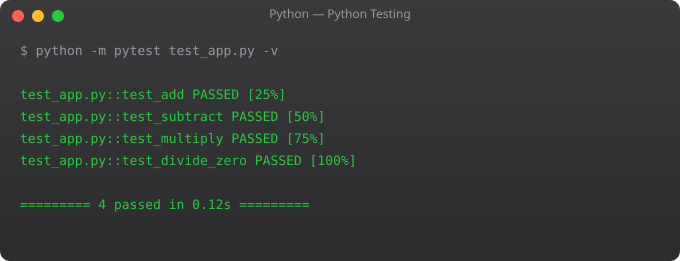

OOP is how large, complex programs stay organized and manageable. Almost every production codebase — web frameworks, AI libraries, game engines — is built using OOP. Understanding this changes how you think about code structure.
Object Oriented Programming is a way of organizing code around objects that contain both data (attributes) and behavior (methods). Instead of writing loose functions and variables, you model real-world concepts as classes.
class Student:
def __init__(self, name, age, grade):
self.name = name
self.age = age
self.grade = grade
def introduce(self):
print(f"Hi, I am {self.name}, age {self.age}, grade {self.grade}")
def is_passing(self):
return self.grade >= 50
# Creating objects
s1 = Student("Suraj", 22, 88)
s2 = Student("Priya", 21, 45)
s1.introduce()
print(s1.is_passing()) # True
print(s2.is_passing()) # Falseclass Animal:
def __init__(self, name):
self.name = name
def speak(self):
print(f"{self.name} makes a sound")
class Dog(Animal):
def speak(self): # Override parent method
print(f"{self.name} barks: Woof!")
class Cat(Animal):
def speak(self):
print(f"{self.name} meows: Meow!")
dog = Dog("Bruno")
cat = Cat("Whiskers")
dog.speak() # Bruno barks: Woof!
cat.speak() # Whiskers meows: Meow!class BankAccount:
def __init__(self, owner, balance):
self.owner = owner
self.__balance = balance # Private attribute
def deposit(self, amount):
if amount > 0:
self.__balance += amount
def withdraw(self, amount):
if amount <= self.__balance:
self.__balance -= amount
else:
print("Insufficient funds")
def get_balance(self):
return self.__balance
acc = BankAccount("Suraj", 5000)
acc.deposit(2000)
print(acc.get_balance()) # 7000class Company:
company_name = "SRJahir Tech"
employee_count = 0
def __init__(self, name):
self.name = name
Company.employee_count += 1
@classmethod
def get_company(cls):
return cls.company_name
@staticmethod
def work_hours():
return "9 AM to 6 PM"
print(Company.get_company()) # SRJahir Tech
print(Company.work_hours()) # 9 AM to 6 PMOOP is a deep topic. The key is to practice — model things around you as classes. A Library, a Hospital, an E-commerce system. In Part 12, we finish the series with virtual environments and best practices for real project setup.
Learning from common pitfalls saves hours of frustration. Here are the mistakes most beginners make in this area and how to avoid them.
The first mistake is trying to memorize syntax before understanding logic. Python syntax is simple — you could memorize it in a day. But if you do not understand why you are writing what you are writing, you will not be able to adapt when things change or when a problem looks slightly different. Always ask: what problem does this solve?
The second mistake is writing very long functions or very long scripts without breaking them into logical units. Real professional code is made of small, focused pieces that each do one thing well. The moment your code does two or three unrelated things in one block, it is time to split it up.
The third mistake is not reading error messages. Python's error messages are actually quite good. They tell you the file, the line number, the type of error, and often a description. Read the entire error before searching online. The answer is usually right there.
In real codebases, every concept from this tutorial series appears constantly. Backend web applications built with Flask or Django use functions, classes, data structures, and error handling throughout every route and service. Data pipelines use loops and comprehensions to process thousands of records efficiently. CLI tools use argument parsing, file handling, and process management. DevOps automation scripts combine shell integration with Python logic to orchestrate deployments, monitor systems, and handle alerts.
The concepts that feel abstract right now will click into place the moment you start building something real. That is why the best way to learn is to pick a small project that solves a problem you actually have — even something simple like a personal expense tracker or a file organizer — and build it using everything you have learned so far.
Before moving to the next part, write a small program that uses what you learned in this section. Do not copy from anywhere. Start with a blank file and build it from memory. The struggle is the learning. If you get stuck, read the code examples again — do not just copy them. Understand each line, then close the examples and write the program yourself. This is how programming actually sticks.
Beyond regular instance methods, Python classes support two additional method types with distinct behaviors and use cases:
class Employee:
company_name = "TechCorp"
employee_count = 0
def __init__(self, name, salary):
self.name = name
self.salary = salary
Employee.employee_count += 1
def get_info(self): # Instance method - has access to self
return f"{self.name} at {Employee.company_name}"
@classmethod
def get_count(cls): # Class method - has access to class, not instance
return f"Total employees: {cls.employee_count}"
@staticmethod
def validate_salary(salary): # Static method - no access to class or instance
return salary > 0
# Usage
emp1 = Employee("Alice", 80000)
emp2 = Employee("Bob", 90000)
print(emp1.get_info()) # Instance method
print(Employee.get_count()) # Class method
print(Employee.validate_salary(50000)) # Static methodUse class methods for factory patterns or operations on class-level state. Use static methods for utility functions that logically belong to the class but do not need access to instance or class state.
Python's special methods (double underscore methods, called dunder methods) allow your classes to integrate naturally with Python's built-in operations. Implementing __str__ defines how the object looks when printed. Implementing __len__ allows len(obj) to work. Implementing __eq__ defines equality comparison. Understanding and implementing appropriate dunder methods makes your classes feel like first-class Python objects rather than awkward foreign constructs.
Design a simple library management system with a Book class and a Library class. Books should have title, author, and availability status. The Library should support adding books, checking out books (marking unavailable), returning books, and listing all available books. Implement __str__ on both classes for readable output, and use a class variable on Library to track total books added.